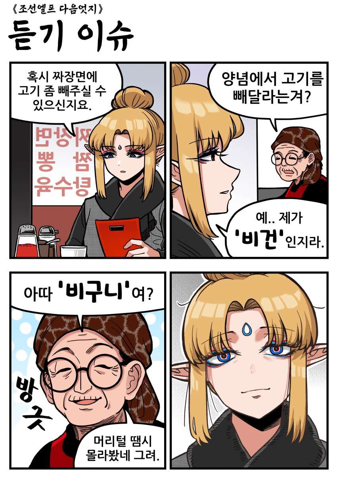

비건이여?
댓글
내 가만 보니 네놈 머리속에 미구니가 가득하구나
미군이여?
마씬데요
팔부신중하나인 천인이 분명하구마잉
아 스님짜장은 오신채도 빼고 해드려야제
진지 빨자면 라드로 재료 볶을 경우 고기 빼도 의미 없음
그 또한 비건 나름이긴 함
그러면 비건이라고 부를 수 없지
아 그러네 그런건 비건에서 강등당해서 베지테리언이 되는구나
요즘 중국집들 돈아낀다고 라드안쓰는집 ㅈㄴ 많아서 ㄱㅊ
스님, 적은가?
테란인데여
(아가씨가 말이 짧네)
뭔가 하위호환이긴한데 ㅋㅋ
비슷해
왓데이
먼데이
버스데이
콩그레츄레이션
비구니는 결혼도 못하잖아 ㅋㅋㅋㅋㅋㅋ
그건 엘프도 마찬가지라는 나쁜말은 ㄴㄴㄴㄴ
아하 ㅋㅋㅋㅋㅋ
90년대 최불암시리즈의 향기가...
좀 다른 생각인데, 저런 노포 중국집은 라드쓸것 같은데 비건은 기름도 식물성만 써야 하는건가?
ㅇㅇ 비건은 극단주의라 동물에서 나온 걸 이용해도 안 됨
라드 치즈 액젓 다 안 됨
가죽 제품은 안될거 같은데 양털도 못쓰려나?
뜻은 통하네
그런걸로 하도록 하죠..
마군입니다